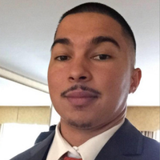

Every ZinnStarter team is paired with a dedicated mentor from the Silicon Valley startup and business community — someone who works alongside your team from day one through the final showcase.
Every team is matched with one dedicated mentor. This is not a panel or a rotating speaker — it is a sustained relationship throughout the entire program.
Our mentors are active professionals — founders, executives, investors, and operators — who bring real-world perspective to your team's specific challenges.
Mentors guide teams toward the final showcase with structured support on strategy, pitching, market thinking, and execution.
To update mentor profiles, edit the mentor cards below in mentors.html. See README for instructions.
As General Partner at Calidris Partners, John advises early-stage startups on technology strategy, due diligence, and innovation design. A business advisor, educator, and science policy consultant, he brings deep expertise in complex networked systems, R&D leadership, and entrepreneurship.
As a founder and former corporate executive, Vinay brings years of experience in Business Development, Sales, GTM, and Partnerships at startups and large corporations including AWS. He currently mentors small businesses through SCORE, a national volunteer organization providing free guidance to entrepreneurs.
Gary brings deep experience across AI, SaaS, robotics, and hardware innovation as a technology strategy and marketing leader. A former Intel executive, he serves as a Faculty Lecturer at Santa Clara University's Leavey School of Business while advising startups and coaching executive leaders.

As a Marketing Specialist at F3 Credit Union, RJ is a full-stack marketer focused on financial empowerment and education. He specializes in data-driven growth strategy, campaign execution, and driving measurable engagement for mission-driven organizations.
Sharon connects the user voice to product and business decisions from 0 to 1 and beyond. With experience across major brands and multiple funded startups, she specializes in product-market fit research, launch strategy, and building research functions that scale.
[MENTOR BIO — 2–3 sentences about their professional background, industry expertise, and what they bring to the teams they mentor.]
We are always looking for experienced Silicon Valley professionals who want to give back by guiding the next generation of student founders.
Reach Out to Sriram